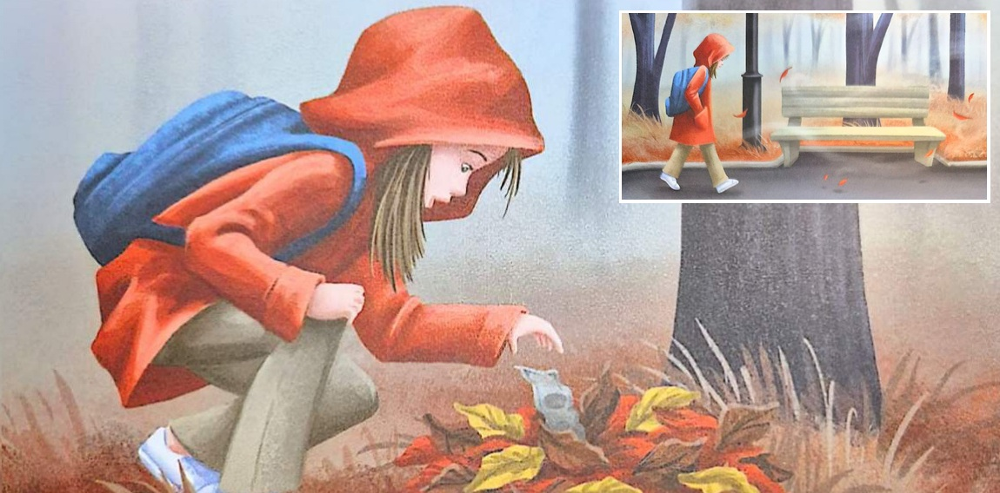
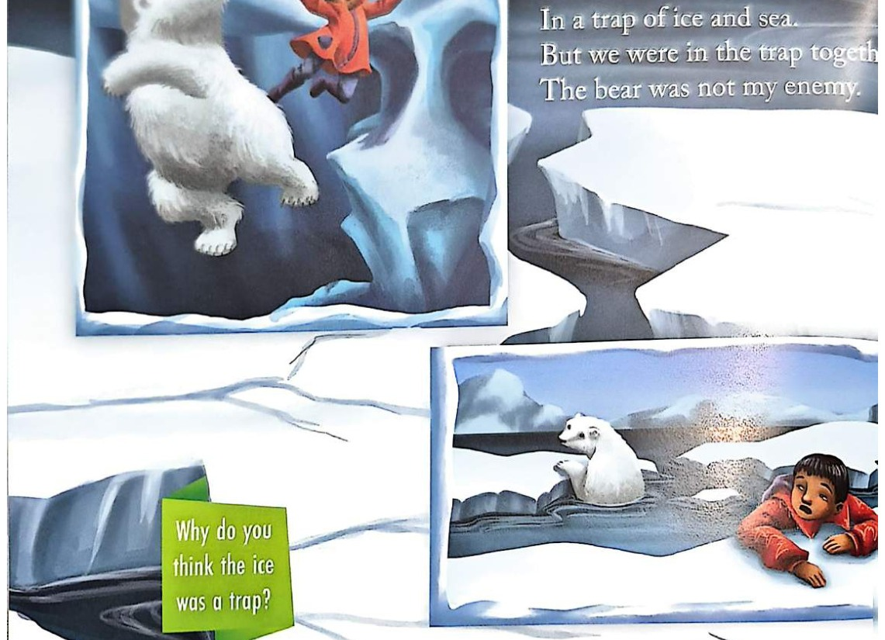
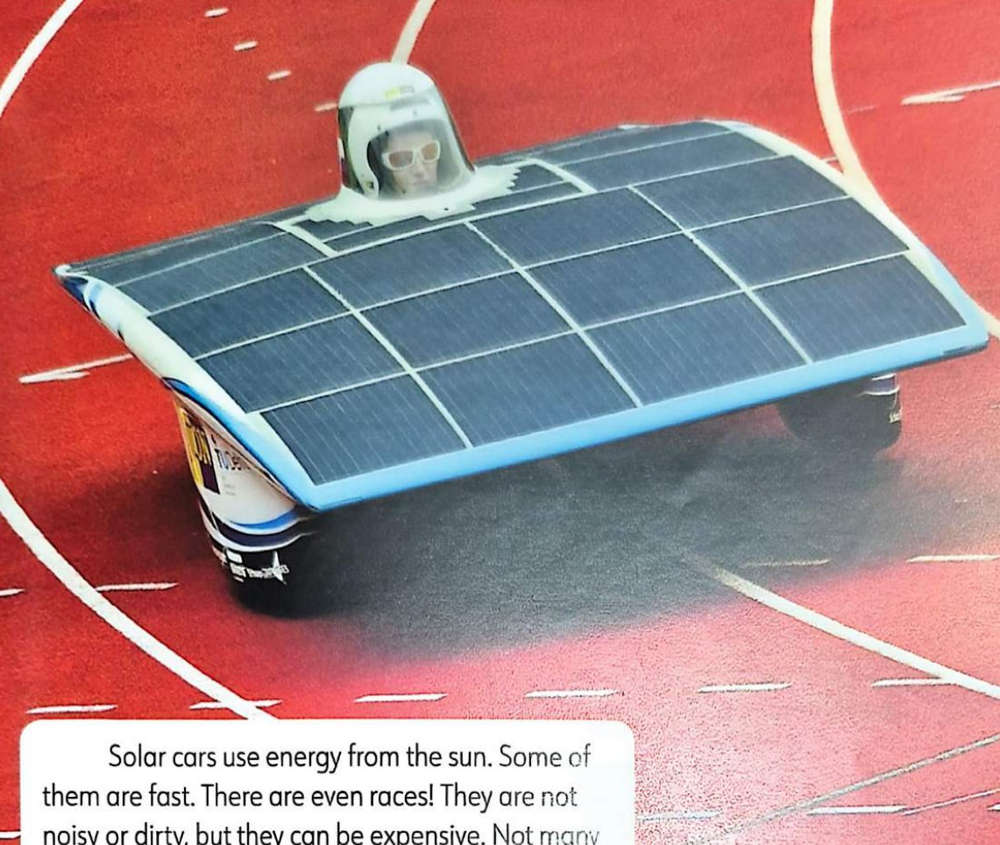

🏔️ Unit 3 Homework Worksheet: The Arctic Rescue
Grade 3 ("How Much Is It?") & Grade 4 ("It Keeps Changing" / "The Bear and I")
English Adventure Academy
Badge: 🏔️ Arctic Explorer
Badge: 🏔️ Arctic Explorer
Student Name: ___________________________
Class: 3A / 3B / 4A / 4B
Perspective: Explorer / Bear
🐾 Zone 1: Trail of Footprints & Compare / Contrast ("The Bear and I", pp. 42–47)
Check (✓) whether each trait or item belongs to The Polar Bear, The Explorer (Man), or Both:
| Trait / Clue from the Poem | 🐻❄️ Polar Bear | 🎣 Explorer (Man) | 🤝 Both |
|---|---|---|---|
| 1. "is twice my size" and has white fur the color of snow | |||
| 2. "lives in a house" and uses a fishing rod & bucket | |||
| 3. "lives in the Arctic", "eats fish", and "is hungry" | |||
| 4. "falls in the water" when the warm winter sea ice is thin |
🪙 Zone 1 & 2: Unit 3 "How Much Is It?" Timeline & Story Match (pp. 40–54)
 1. History of Money Word Bank:
1. History of Money Word Bank:(bartered • valuable • paper money • credit card)
a) In 6000 BCE, farmers ______________ a goat for grain.
b) In 600 BCE Lydia, silver and gold were ______________.
c) In 800–900 CE, China made the first ______________.
d) In 1958 CE, people used the first plastic ______________.

2. "The $100 Bill" & "-ar" Spelling (pp. 48–54):(park • hard • pocket • money is tight)
a) Jodie laughed ______________ when Paige had no phone.
b) Paige walked through the ______________ and found $100.
c) She put the green bill inside her coat ______________.
d) She helped her dad because "________________________."
⛰️ Zone 3: Poem & Story Situations + Clean Cars Reflection (pp. 44–55)

3. Poem Situation ("The Bear and I", Stanza 6):Why did the Man say "The bear was not my enemy" when the thin ice cracked and they fell in together?
Answer: _____________________________________________
_____________________________________________________

4. Making Good Changes (p. 55):Write one responsible choice you can make to help your family with money OR keep our world and the Arctic clean:
I should / I can ____________________________________
_____________________________________________________